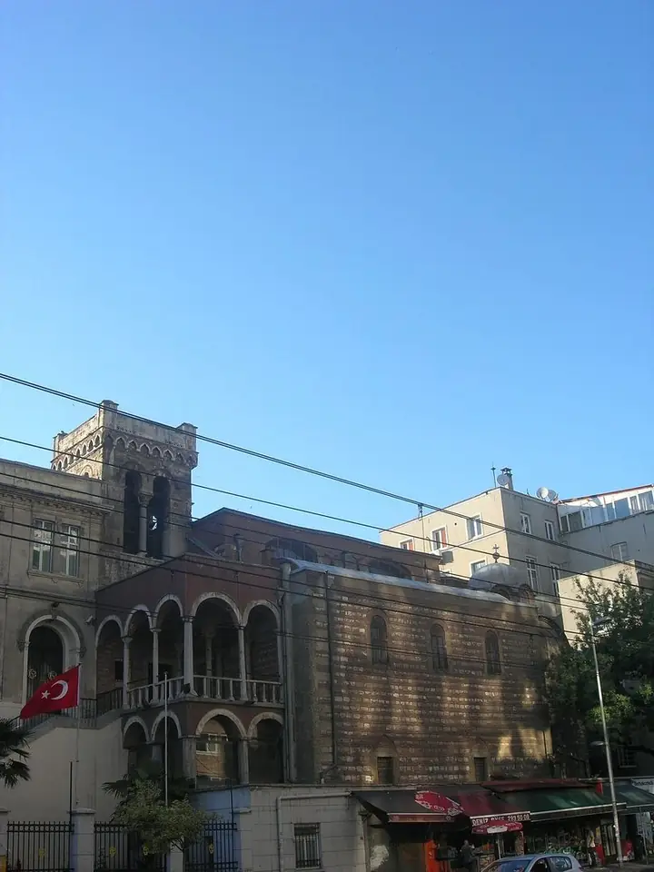
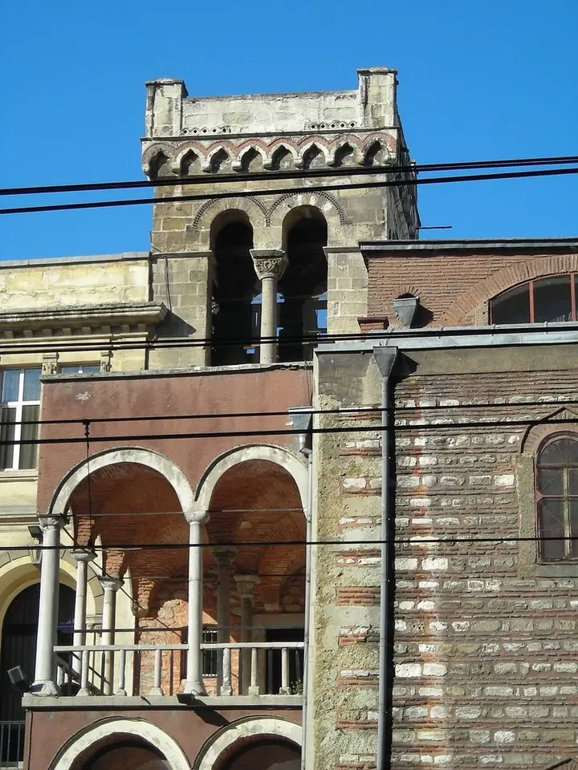
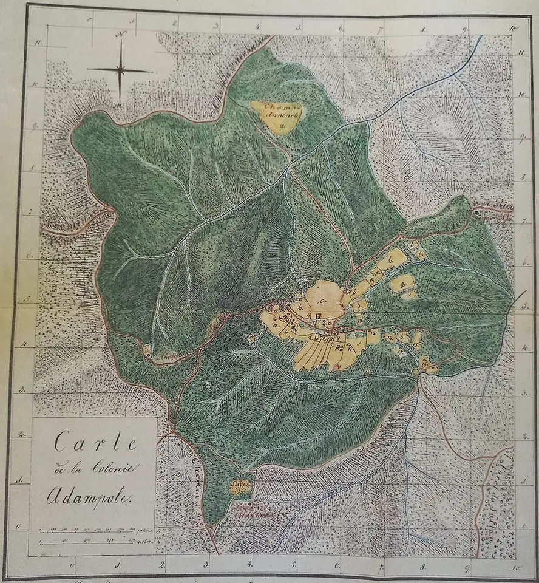

The Great Emigration & Mickiewicz
Saint-Benoît – the Lazarists and the birth of Adampol
The Polish exiles received the land for Adampol in 1842 from the Lazarist fathers of this church – the story of the Polish village on the Bosphorus begins here.


- District
- Beyoğlu
- Period
- 1842
- Visiting
- Limited access
The story
The land on which Adampol was built came to the Polish exiles from the French Lazarist fathers – and the Lazarists' house in Istanbul was this church and monastery in Galata.
Saint-Benoît was founded by Benedictines in 1427 and is the oldest Catholic church in Istanbul still in use. Since 1783 it has belonged to the priests of the Congregation of the Mission of St Vincent de Paul, known as Lazarists, who run the French school beside it – today's Lycée Saint-Benoît.
In 1842 Michał Czajkowski, Prince Adam Jerzy Czartoryski's agent in Istanbul, signed an agreement with Fr Leleu, superior of the Lazarists here, for land in the forests of the Asian shore. The congregation granted it on a perpetual lease and kept the pastoral care of the settlement; on 30 June 1842 the agreement was confirmed by Fr Étienne and by the prince himself. Before they had huts of their own, the first settlers lived on the Lazarists' nearby farm. The Czartoryskis bought the land outright only in 1883.
Without that agreement there would be no Polish village on the Bosphorus. So the story of Adampol is best begun here, on the steps that climb from busy Kemeraltı Caddesi to the terrace of the old church.




How to visit
The church stands on a terrace above Kemeraltı Caddesi 11 in Karaköy, on the edge of Tophane, a few minutes' walk from the Tophane and Karaköy stops of the T1 tram; steps lead up from the street, and the old bell tower rises above the roofs. It lies within the grounds of a working school, so you can usually go in only at service times – check on the spot or with the Apostolic Vicariate. The gateway, the bell tower and the school building can be seen from the street. Nothing here mentions Adampol.
People
- Michał Czajkowski (Sadyk Pasza)
- Adam Jerzy Czartoryski
- ks. Leleu CM
- ks. Étienne CM
Location
Beyoğlu, Istanbul · Coordinates: 41.02508, 28.97678